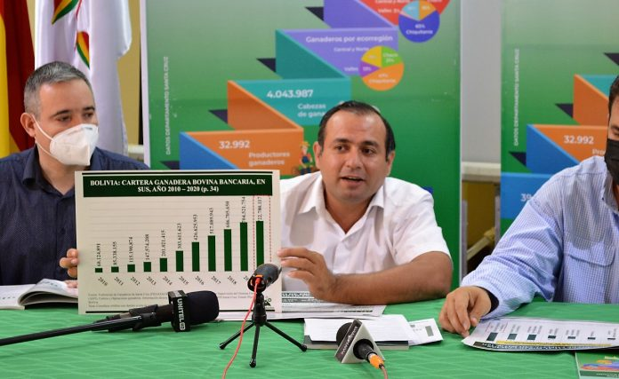

Tarija: Ganaderos dispuestos a bloquear por cuatro demandas
El sector ganadero ha dado 48 horas a la Gobernación para que responda un pliego petitorio de cuatro puntos, de lo contrario, advierten con asumir medidas de presión con bloqueo de carreteras Tras una reunión de las asociaciones ganaderas de las distintas provincias, la Federación de Ganaderos de Tarija (Fegatar) ha emitido un voto resolutivo en el que da 48 horas al gobernador de Tarija, Oscar Montes, para que pueda atender una serie de demandas. Entre ellas, la creación de un fondo rotatorio para este sector, una reingeniería del Servicio Departamental Agropecuario (Sedag) y establecer el Consejo Departamental Agropecuario. Desde la Gobernación argumentaron que ya existe el Prosol, para apoyar a los campesinos y ganaderos.
Argumentos de la Fegatar
Desde Fegatar argumentan que la creación del fondo rotatorio ganadero permitirá a este sector acceder a recursos para campañas de vacunación, la compra de animales reproductores y obtener microcréditos para ganaderos de todo el departamento.
